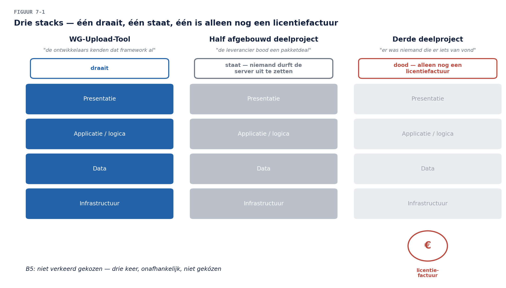

Business & Enterprise Architectuur — Niveau 1
Deel 7 · Reader — Fase D: technologiearchitectuur
Positionering. Deze cursus bereidt voor op TOGAF® EA Foundation (OGEA-101) en ArchiMate® 3 Part 1 en vervangt het officiële examenmateriaal van The Open Group niet. Examenstof: doel en inhoud van fase D, technologiestandaarden, de Standards Library. Dit deel is bewust het minst technische technologiedeel dat je ooit zult volgen: het gaat over besturing van technologie, niet over technologie zelf.
Leerdoelen
Na dit deel kun je:
- het doel van fase D beschrijven en uitleggen waarom technologiearchitectuur ná business, data en applicatie komt;
- het onderscheid hanteren tussen technologiediensten, platformen en producten — en waarom de architectuur in diensten denkt;
- een standaardenkader opzetten: categorieën, statussen en de levenscyclus van een standaard;
- het afwijkingenproces ontwerpen: hoe je afwijken mogelijk maakt zónder het kader te ondermijnen — het definitieve B5-antwoord;
- leveranciers- en concentratierisico’s op architectuurniveau beoordelen;
- de niet-functionele eisen (beschikbaarheid, schaalbaarheid, security, herstelbaarheid) als architectuurgereedschap hanteren;
- de baseline- en target-technologiearchitectuur voor het werkgeversdossier op hoofdlijnen schetsen.
Bevinding van vandaag: B5 — “beslissingen over technologiekeuzes werden per deelproject genomen, zonder toetsing aan een gemeenschappelijk kader.” De laatste domeinbevinding. Na vandaag bestáát dat kader — en belangrijker: het proces dat het levend houdt.
1. Casus: drie stacks en een gewetensvraag
Bij de voorbereiding van het werkgeversdossier stuit je op de erfenis van WGP 2.0 in haar meest tastbare vorm: de drie deelprojecten kozen drie verschillende technologiestacks. Eén draait er nog (de WG-Upload-Tool), één is half afgebouwd blijven staan op een server die niemand durft uit te zetten, en de derde bestaat alleen nog als licentiefactuur die jaarlijks stilzwijgend verlengd wordt.
Als je navraagt hoe die keuzes destijds tot stand kwamen, krijg je drie antwoorden: “de ontwikkelaars kenden dat framework al”, “de leverancier bood een pakketdeal”, en — het eerlijkste — “er was niemand die er iets van vond”. Dat laatste is B5 in één zin: het probleem was nooit dat er verkeerd gekozen werd, het probleem was dat er niet gekózen werd — er werd slechts gepakt wat voorhanden was, drie keer, onafhankelijk.
De directie wil nu het omgekeerde uiterste: “gewoon één standaard voor alles, en daar wijkt niemand meer van af.” Vandaag leer je waarom óók dat het foute antwoord is — en wat het goede is.

2. Waarom fase D als laatste domein komt
De volgorde-redenering uit deel 2 voltooit zich hier: technologie dient de applicaties, de applicaties dienen de gegevens en processen, die dienen de business. Fase D als laatste betekent níet dat technologie onbelangrijk is — het betekent dat technologiekeuzes hun rechtvaardiging van boven halen. “Welk platform?” is pas beantwoordbaar als je weet welke applicaties erop moeten draaien, met welke gegevens, voor welke stromen, onder welke eisen.
De praktijk is weerbarstiger, en dat mag gezegd: soms ís er al een platform (het pensioenlandschap draait niet op wensdenken), soms dwingt een leverancier een richting af, soms komt een technologiekans éérst en zoekt de business er een toepassing bij. De ADM vangt dat met iteratie (deel 2, §4): fase D-inzichten mogen terugslaan op C en B. Wat overeind blijft is de bewijslast: een technologiekeuze zonder redenering vanuit de bovenliggende lagen is een B5 in wording — ook als de keuze toevallig goed uitpakt.
Voor het denken zelf gebruikt fase D de technologiedienst als eenheid: niet “wij hebben product X van leverancier Y” maar “wij hebben een dienst ‘berichtenuitwisseling’ / ‘gegevensopslag’ / ‘identiteitsbeheer’, met eisen, en product X vult die dienst nu in”. Herken het patroon — het is ABB versus SBB (deel 2) op technologieniveau: de dienst is de behoefte, het product de invulling. Producten komen en gaan; de dienst blijft. Wie in producten denkt, schrijft zijn architectuur in vergankelijke inkt.
3. Het standaardenkader: de plank en de regels
3.1 Wat er op de plank ligt
Het hart van fase D voor een organisatie als Meridiaan is geen infrastructuurtekening maar het standaardenkader: per technologiedienst de vastgestelde invulling(en), gepubliceerd in de Standards Library (deel 2 — hier krijgt die zijn inhoud). De gangbare indeling per standaard:
- De dienst die hij invult (identiteitsbeheer, berichtenuitwisseling, gegevensopslag, applicatieplatform, rapportage…).
- De status: verplicht (hier bouw je op), aanbevolen (goede default, gemotiveerd afwijken kan), gedoogd (bestaand gebruik mag blijven, nieuw gebruik niet — de uitsterfstatus), verboden (ook bestaand gebruik moet weg, met einddatum).
- De geldigheid: wie heeft hem vastgesteld, wanneer, en wanneer wordt hij herzien.
De statussen zijn het venijn en de kracht. “Gedoogd” is de status die de meeste organisaties missen en het hardst nodig hebben: zonder haar is elke bestaande afwijking óf illegaal (en gaat ondergronds — het schaduwpatroon kent inmiddels iedereen) óf stilzwijgend legitiem (en groeit). Gedoogd zegt: dit bestaat, dat weten we, het mag blijven draaien, maar het krijgt geen nieuwe bewoners. De WG-Upload-Tool-stack krijgt precies die status — met de mijlpaalgebonden vervaldatum uit deel 6.
3.2 Hoe standaarden ontstaan en sterven
Een standaard is een besluit, en besluiten hebben een levenscyclus: voorgesteld (door wie dan ook — vaak een project dat iets nieuws nodig heeft) → beoordeeld (past hij bij de diensten en eisen? wat kost een extra standaard aan beheer?) → vastgesteld (door het gremium dat deel 9 inricht) → periodiek herzien → uitgefaseerd via gedoogd naar verboden. Twee ontwerpprincipes voor het kader zelf:
- Zo min mogelijk standaarden, zo veel mogelijk gedekt. Elke extra standaard voor dezelfde dienst verdubbelt beheerlast en halveert schaalvoordeel. De vraag bij elk voorstel is niet “is dit een goed product?” maar “is de dienst niet al gedekt — en zo ja, wat rechtvaardigt een twééde invulling?”
- De standaard dient de bouwer. Een kader dat alleen verbiedt, wordt omzeild; een kader dat de standaardroute óók de makkelijkste route maakt (voorgeïnstalleerd, gedocumenteerd, ondersteund), wordt gevolgd. De wortel verslaat de stok — deel 19 werkt dit uit voor de agile praktijk.
3.3 Afwijken: het proces dat het kader redt
Nu de gewetensvraag van de directie. “Niemand wijkt meer af” klinkt sterk en is de zwakste governance die er bestaat, om twee redenen. Ten eerste: er zíjn legitieme afwijkingen — een pakket dat op een niet-standaard database draait maar functioneel verreweg het beste is; een experiment dat juist búiten de standaard iets moet proberen. Ten tweede: een verbod zonder ventiel bouwt druk op, en druk zoekt een uitweg — ondergronds. Het is de derde keer dat dit patroon langskomt (begrippen, kopieën, nu technologie) en het heeft dezelfde oplossing: maak de uitzondering legaal, expliciet en duur genoeg.
Het afwijkingenproces in vier regels:
- Afwijken mag — vooraf en beargumenteerd. De aanvraag beschrijft welke standaard, waarom die niet volstaat, en wat de afwijking kost (extra beheer, kennis, exit).
- De aanvrager draagt de meerkosten zichtbaar. Niet als straf, maar als eerlijke prijs: de afwijking is een keuze van het project, dus de last hoort bij het project — dat disciplineert beter dan elk verbod.
- Elke afwijking krijgt een vervaldatum of een migratiepad. Een afwijking zonder einde is een nieuwe, ongewilde standaard in wording.
- Alles staat in het Governance Log. Wie over drie jaar vraagt “waarom draait dit hier op X?”, vindt het antwoord — het geheugen dat WGP 2.0 miste (B9’s technologiehelft).
Vergelijk met WGP 2.0: daar was afwijken niet verboden en niet toegestaan — het bestond gewoon niet als categorie, want er was geen kader om ván af te wijken. B5 is niet opgelost door standaarden vast te stellen; B5 is opgelost door standaarden plus het afwijkingenproces plus het log. Het kader zonder ventiel faalt door explosie; het ventiel zonder kader is WGP 2.0.

4. Niet-functionele eisen: de taal van fase D
Waar fase B in capabilities spreekt en fase C in gegevens en services, spreekt fase D in kwaliteitseigenschappen: beschikbaarheid, schaalbaarheid, security, herstelbaarheid, performance. Ze heten “niet-functioneel” en zijn het meest functionele wat er is: het verschil tussen een aanleverkanaal dat de laatste dag van de maand overeind blijft (wanneer álle werkgevers tegelijk aanleveren) en een kanaal dat dan plat gaat, zit volledig in deze eisen.
De architectuurdiscipline: eisen komen van boven — uit de concerns (deel 3) en de business services (deel 4) — en worden toetsbaar geformuleerd, per dienst. “Het kanaal moet goed beschikbaar zijn” is een verzuchting (het patroon van deel 5); “het aanleverkanaal is op de laatste drie werkdagen van de maand beschikbaar met maximaal vier uur onderbreking, en een mislukte aanlevering is nooit kwijt” is een eis waar je een platform op kunt kiezen — en afrekenen. Let op de tweede helft van die eis: herstelbaarheid (geen aanlevering kwijt) is voor Meridiaan belangrijker dan maximale beschikbaarheid, en dat soort rangordes — wat mag falen, wat nooit — is precies het gesprek dat fase D met de business voert. De CISO-concerns van deel 3 landen hier eveneens: security-eisen zijn kwaliteitseigenschappen als alle andere, vooraf in het kader (het antwoord dat haar in deel 3 beloofd werd).
5. Leveranciers en concentratie: het risico op de kaart
De TIME-tabel van deel 6 gaf PremiePlus een aantekening: zeven capabilities op één systeem. Fase D maakt daar een risico-oordeel van, langs drie vragen:
- Concentratie: wat valt er om als dit omvalt? (Zeven capabilities, waaronder premie-inning — het bestaansrecht.)
- Afhankelijkheid: hoe vast zit Meridiaan aan de leverancier — contractueel (looptijd, voorwaarden), technisch (proprietary formaten? de gegevens eruit te krijgen? — de bronnenkaart van deel 5 wordt hier exit-instrument), en qua kennis (kan alleen de leverancier het aanpassen)?
- Alternatief: wat is het geloofwaardige uitwijkscenario, en wat kost het om dat geloofwaardig te hóuden?
Het architectuurantwoord op leveranciersrisico is zelden “vervangen” (de remedie kan erger zijn dan de kwaal) en vrijwel altijd: de exit-optie onderhouden. Concreet: gegevens in overdraagbare vorm beschikbaar (de ontsluiting van deel 6 dient ook dit doel), koppelvlakken op standaarden in plaats van leverancierseigen formaten, kennis gedocumenteerd, en het contract periodiek herijkt mét dat alternatief op tafel. Een organisatie met een onderhouden exit-optie hoeft zelden te vertrekken — juist omdat de leverancier dat weet. Voor een pensioenuitvoerder is dit bovendien geen vrije keuze: de toezichthouder (DNB — daar is de verschuivende stakeholder van deel 3) verwacht aantoonbare beheersing van uitbestedings- en concentratierisico’s.
6. Baseline en target voor het werkgeversdossier
Fase D levert voor het dossier op hoofdlijnen:
Baseline: de drie-stacks-erfenis in kaart (welke diensten, welke producten, welke status verdienen ze), de PremiePlus-afhankelijkheid beoordeeld, de niet-functionele werkelijkheid gemeten (wat ís de beschikbaarheid op de maandpiek?), en de eerste Standards Library gevuld — grotendeels met wat er feitelijk al is, eerlijk gestatust: veel “gedoogd”, weinig “verplicht”, en dat is voor een eerste versie precies goed.
Target: het nieuwe aanleverkanaal op de vastgestelde standaarden (de eerste bouwsteen die vanaf dag één binnen het kader ontstaat — symbolisch én praktisch), de identiteitsdienst op de IAM-Suite (de CISO-standaard), de uitstervende stacks op gedoogd-met-vervaldatum, en de niet-functionele eisen per dienst vastgesteld en meetbaar.
En daarmee is het viertal compleet: business (4), data (5), applicatie (6), technologie (7) — elk met baseline, target en gap. Deel 8 geeft dit alles één tekentaal; deel 9 bouwt de besturing die het geheel levend houdt. De zeven bevindingen zijn op de governance-restanten na gesloten.
7. Samenvatting
- Fase D komt als laatste omdat technologiekeuzes hun rechtvaardiging van boven halen; de praktijk mag iteratief zijn, de bewijslast blijft.
- Denk in technologiediensten (blijvend), niet in producten (vergankelijk) — ABB/SBB op technologieniveau.
- Het standaardenkader werkt met statussen; “gedoogd” is de onmisbare uitsterfstatus. Zo min mogelijk standaarden, en de standaardroute is de makkelijkste route.
- B5 is opgelost door kader + afwijkingenproces + log: afwijken mag, vooraf, beargumenteerd, tegen zichtbare meerkosten, met vervaldatum. Het kader zonder ventiel faalt door explosie; het ventiel zonder kader is WGP 2.0.
- Niet-functionele eisen zijn de taal van fase D: toetsbaar, per dienst, van boven afgeleid — inclusief de rangorde wat mag falen en wat nooit.
- Leveranciersrisico beantwoord je met een onderhouden exit-optie, niet met reflexmatige vervanging; voor een pensioenuitvoerder is die beheersing ook een toezichtseis.
- Het domeinviertal is compleet; deel 8 geeft de taal, deel 9 de besturing.
Begrippenlijst
| Begrip | Omschrijving |
|---|---|
| Technologiedienst | de behoefte-eenheid van fase D (“identiteitsbeheer”); producten vullen haar in |
| Standards Library | de gepubliceerde standaarden per dienst, met status en geldigheid |
| Statussen | verplicht · aanbevolen · gedoogd (uitsterf) · verboden (met einddatum) |
| Afwijkingenproces | vooraf, beargumenteerd, meerkosten zichtbaar, vervaldatum, in het log |
| Niet-functionele eisen | toetsbare kwaliteitseigenschappen per dienst, van boven afgeleid |
| Concentratierisico | wat valt om als dit omvalt — capability-gewicht per systeem/leverancier |
| Exit-optie | het onderhouden, geloofwaardige uitwijkscenario als beheersmaatregel |
Verder lezen
- The Open Group, TOGAF® Standard, 10th Edition — Phase D en de Standards Library (examenstof)
- DNB-guidance uitbesteding en informatiebeveiliging — de toezichtkant van §5 (achtergrond; geen examenstof)
Volgende deel: ArchiMate — één tekentaal voor alles wat je in de delen 4 t/m 7 hebt beschreven. Neem je artifacts mee: ze gaan op de tekentafel.